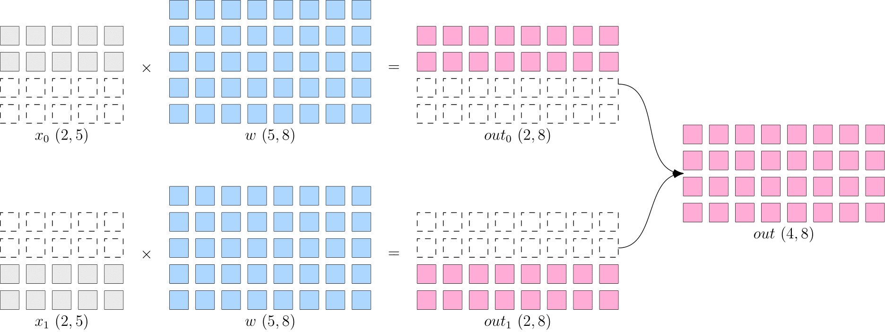
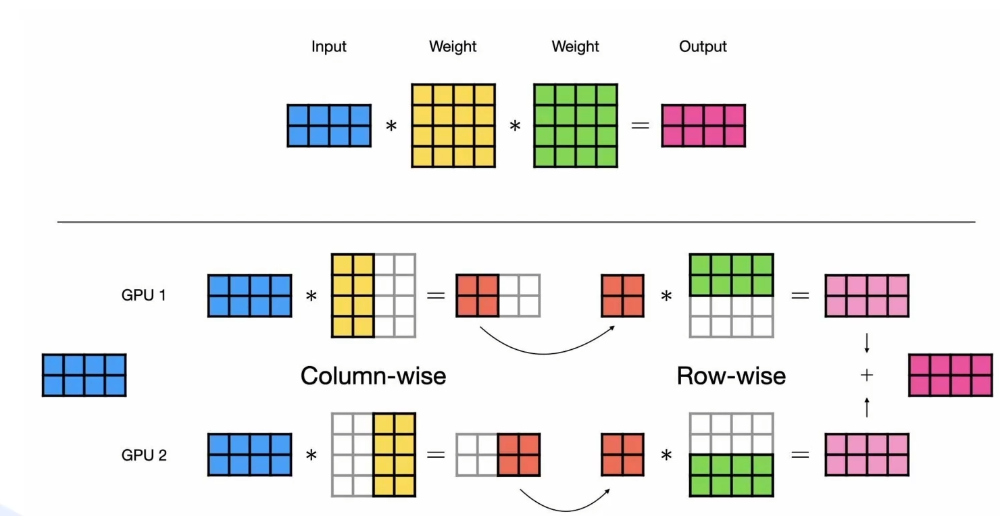
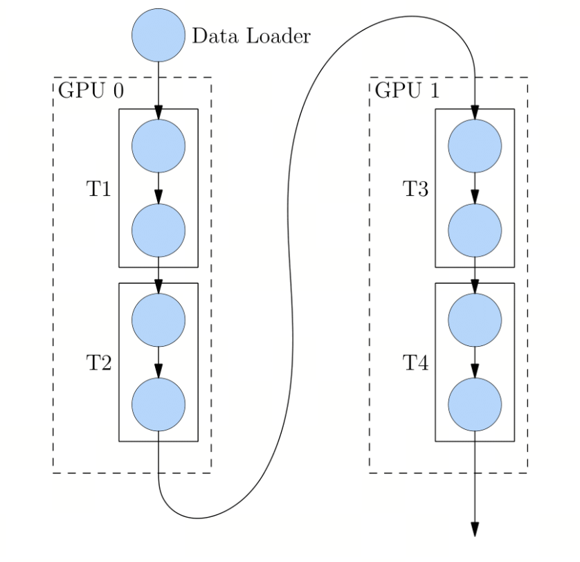
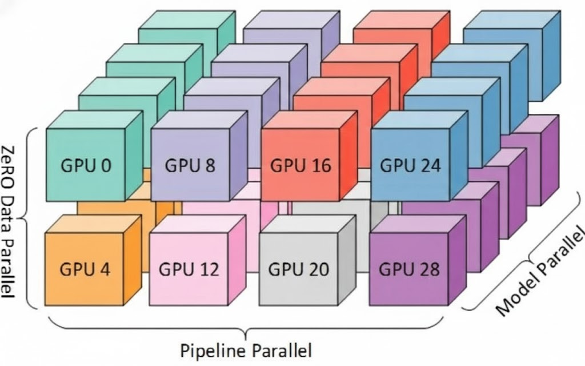

第3课时：分布式训练技术概览¶
背景介绍：跨越“显存墙”与“时间墙”¶
在大模型（LLM）爆发的今天，AI 工程师面临的战场已经彻底改变。如果我们把训练模型比作建造摩天大楼，那么单张 GPU（即便是目前地表最强的 NVIDIA H100 80GB）已经从“全能工兵”变成了仅仅是一块“砖”。
为什么分布式训练从“选修课”变成了“必修课”？我们需要从两个残酷的物理瓶颈说起：
核心痛点 1：装不下（显存墙）¶
很多初学者误以为：模型参数量 10B（100亿），用 FP16 存储不是才 20GB 吗？80GB 的显卡怎么会不够？
这是一个巨大的误区。在训练过程中，模型参数（Weights）仅仅是显存占用的冰山一角。
让我们算一笔账（以 Adam 优化器 + 混合精度训练为例）：
-
模型参数：1 份 FP16 权重 → 2 Bytes
-
梯度 (Gradients)：1 份 FP16 梯度 → 2 Bytes
-
优化器状态 (Optimizer States)：Adam 需要维护动量(Momentum)和方差(Variance)的 FP32 副本 → 12 Bytes
-
中间激活值 (Activations)：前向传播产生的中间结果，主要取决于 Context Length（上下文长度）和 Batch Size → 动态且巨大
结论：每训练 1 个参数，至少需要 16~20 Bytes 的静态显存。
实例：训练一个 175B (GPT-3 级) 的模型，光是静态显存就需要 3.5 TB。
而一张 H100 只有 80 GB。
这意味着，为了把模型“塞进”显存，我们至少需要 44 张 H100 完美拼接在一起，这还没算计算时的临时开销。
核心痛点 2：等不起（时间墙）¶
假设你有无限显存的魔法 GPU，但算力不变。
-
训练 Llama-3-70B 这样级别的模型，通常需要消耗约 \(10^{24}\) FLOPs 的计算量。
-
一张 H100 在实际训练中的有效算力大约是 300~400 TFLOPS。
-
计算结果：用单卡跑完这趟训练，大约需要 100 年。
没有人能等一个世纪来看 Loss 曲线。为了将训练时间压缩到 几周甚至几天，我们需要成千上万张 GPU 并行计算。
本节课目标¶
当 GPU 数量从 1 增加到 10000 时，系统的复杂度是指数级上升的。
-
如何让 1000 张卡计算同一个模型，而不互相打架？
-
如何避免 GPU 算 1 毫秒，却要等网络传输 10 毫秒（通信瓶颈）？
-
当显存不够时，是切分数据、切分层、还是切分张量？
本节课我们将深入黑盒内部，解析多张 GPU 是如何像一个精密配合的集团军一样协作的，带你读懂 DDP、FSDP、DeepSpeed 这些技术名词背后的战术逻辑。
1. 通信原语与硬件基础：分布式训练的“语言”与“道路”¶
分布式训练的核心挑战在于：多张 GPU 之间如何高效、准确地同步信息（如梯度、参数、优化器状态）。这种同步机制构建在高性能计算（HPC）领域的标准通信动作（Communication Primitives）之上，并依赖于底层的物理连接带宽。
在深度学习领域，我们通常使用 NVIDIA NCCL (NVIDIA Collective Communications Library) 作为底层的通信后端，它针对 PCIe、NVLink 和 InfiniBand 进行了深度优化。
1.1 三大核心通信原语 (Communication Primitives)¶
当我们在 PyTorch 中调用 dist.all_reduce 时，底层并非简单的“发送-接收”，而是执行了一系列高度优化的集合通信算法（如 Ring-based 或 Tree-based 算法）。
1. AllReduce（全归约）：同步的总和¶
-
定义与原理：
-
语义：系统中的每个 GPU 都持有一个张量 \(T_i\)，操作结束后，所有 GPU 都会得到相同的张量 \(T_{sum} = \text{Op}(T_0, T_1, ..., T_n)\)，其中 \(\text{Op}\) 通常是 Sum（求和）、Mean（求平均）或 Max（求最大值）。
-
实现机制：在 Ring-AllReduce 算法中，该操作实际上由两个步骤组成：ReduceScatter（归约并分发） +AllGather（全收集）。首先将数据分块并归约，使每张卡拥有一部分最终结果，然后再将这些结果广播给所有卡。
-
-
关键应用场景：
- DDP (Distributed Data Parallel) 的核心生命线。在反向传播结束后，每张卡计算出的梯度是基于局部数据（Local Batch）的。必须通过 AllReduce 对所有卡的梯度求平均，确保所有卡使用相同的梯度进行参数更新，从而保证模型副本的一致性。
-
形象比喻：大家各自清点手中的现金（计算局部梯度），然后通过一个快速的传递网络，最后每个人手中的账本都记录了所有人的现金总额（全局梯度）。
2. AllGather（全收集）：碎片的拼接¶
-
定义与原理：
-
语义：每个 GPU 持有一部分数据 \(D_i\)（通常是张量的不同切片），操作结束后，所有 GPU 都会收到所有其他 GPU 的数据，并将它们拼接成一个完整的张量 \(D_{full} = [D_0, D_1, ..., D_n]\)。
-
数据流向：\(1 \to N\) 的广播的集合版。相当于每张卡都做了一次 Broadcast，最终每张卡都拥有了全局完整数据。
-
-
关键应用场景：
- FSDP (Fully Sharded Data Parallel) 的前向传播。在 FSDP 中，大模型的权重被切分存储在不同 GPU 上（以节省显存）。当计算流转到第 \(k\) 层时，所有 GPU 需要通过 AllGather 从邻居那里“借”来该层的剩余参数，临时拼凑出完整的第 \(k\) 层参数进行计算，算完即弃（释放显存）。
3. ReduceScatter（归约并分发）：求和后切分¶
-
定义与原理：
-
语义：它是 AllGather 的逆操作，也是 AllReduce 的一部分。所有 GPU 都有一个完整的张量（或者张量列表），系统对这些张量进行规约（如求和），但结果不完整分发，而是将结果切分成 \(N\) 块，第 \(i\) 张 GPU 只拿走第 \(i\) 块结果。
-
优势：相比于 AllReduce，它减少了后续的广播步骤，显著降低了通信量。
-
-
关键应用场景：
- FSDP 的反向传播。当每张卡计算完梯度后，不需要获得完整的全局梯度（那样会爆显存）。每张卡只需要获得它自己负责更新的那一部分参数对应的梯度总和。因此，梯度在聚合的同时就被切分了。
1.2 硬件拓扑：NVLink 与 InfiniBand¶
通信原语是软件层面的“语言”，而物理连线则是数据传输的“道路”。道路的宽窄（带宽）和拥堵程度（延迟）直接决定了训练的木桶效应。
1. NVLink 与 NVSwitch (机内高速互联)¶
-
技术定位：解决单台服务器内部（Intra-node）GPU 之间的通信瓶颈。
-
技术指标：
-
NVLink：一种高带宽、低延迟的点对点互连技术。第四代 NVLink（H100）的双向带宽高达 900 GB/s，是 PCIe Gen5 的 7 倍以上。
-
NVSwitch：如果说 NVLink 是光纤，NVSwitch 就是全光交换机。它允许服务器内的 8 张 GPU 以“全互联（All-to-All）”的方式通信，任意两张 GPU 之间都可以直接传输数据，无需 CPU 参与。
-
-
对训练的影响：
- 决定模型并行 (TP) 的上限：在张量并行（Tensor Parallelism）中，每一层的矩阵乘法都需要在 GPU 间同步中间结果。这种通信频率极高，必须依赖 NVLink 的超高带宽，否则 GPU 会因等待数据而严重空转。
2. InfiniBand (IB) / RoCE (机间互联)¶
-
技术定位：解决多台服务器之间（Inter-node）的通信问题，构建万卡集群的基石。
-
核心技术：RDMA (Remote Direct Memory Access)：
-
传统的 TCP/IP 网络通信需要 CPU 参与数据拷贝（内存 \(\leftrightarrow\) CPU \(\leftrightarrow\) 网卡），延迟极高。
-
RDMA 允许 GPU 的显存数据直接通过网卡传输到远程服务器的 GPU 显存中，完全绕过 CPU 和操作系统内核，实现微秒级的超低延迟。
-
-
主要协议：
-
InfiniBand (IB)：专为高性能计算设计的原生网络协议，具有极高的吞吐量（如 NDR 400Gbps）和极低的延迟，但成本较高。
-
RoCE (RDMA over Converged Ethernet)：在以太网上实现 RDMA，成本较低，是目前高性价比集群的主流选择。
-
-
对训练的影响：
- 决定数据并行 (DP/FSDP) 与流水线并行 (PP) 的扩展性。当集群扩展到千卡规模时，梯度同步的开销主要由机间网络决定。如果网络拓扑设计不佳（如收敛比过高），通信将成为绝对瓶颈。
1.3 进阶原理：通信与计算的重叠 (Communication-Computation Overlap)¶
在理想的分布式训练中，我们希望通信是“隐形”的。
-
原理：GPU 具有独立的计算单元（CUDA Cores/Tensor Cores）和数据传输引擎（Copy Engines）。
-
流水线优化：在反向传播过程中，PyTorch DDP 会将梯度分桶（Bucketing）。当第 \(N\) 层的梯度计算完成时，立即触发异步的 AllReduce 传输，与此同时，计算单元继续计算第 \(N-1\) 层的梯度。
-
目标：只要计算梯度的时间 > 传输梯度的时间，通信延迟就被完全“掩盖”了，实现了 1+1 < 2 的时间开销。这也是为什么在慢速网络下，增加模型计算密度（如增加 Batch Size）反而能提升并行效率的原因。
2. 并行策略详解：如何拆解庞然大物¶
为了将参数量高达数千亿的大模型装入有限的显存并高效训练，我们需要在不同维度上对模型和数据进行拆解，这俗称“切蛋糕”。根据拆解维度的不同，业界演化出了三种主流的并行范式。
2.1 数据并行：从冗余到极致切分 (DDP vs FSDP)¶
这是最基础也最常用的并行方式，其核心思想是增加计算节点以提升吞吐量（通过增大 Global Batch Size）。
DDP (Distributed Data Parallel)¶

将数据 \(x\) 进行切分，而每个设备上的模型 \(w\) 是完整的、一致的。如下图所示，\(x\) 被按照第0维度平均切分到2个设备上，两个设备上都有完整的 \(w\)。
这样，在两台设备上，分别得到的输出，都只是逻辑上输出的一半（形状为 \(2 \times 8\)），将两个设备上的输出拼接到一起，才能得到逻辑上完整的输出。
-
核心原理：“模型复制，数据切分”。
-
在训练开始前，将完整的模型参数广播（Broadcast）到每一张 GPU 上。
-
在训练过程中，每张卡读取不同的数据分片（Micro-Batch）进行前向和反向传播。
-
梯度同步：反向传播结束后，各卡通过
AllReduce原语对梯度进行累加求和，确保所有卡使用完全相同的梯度更新参数。 -
通信优化：为了掩盖通信延迟，DDP 采用了分桶（Bucketing）机制。即不必等所有梯度都算完再通信，而是算完一层（或积攒一定量）就立即发送，实现计算与通信的流水线重叠。
-
-
瓶颈：显存冗余。对于 \(N\) 张卡，模型参数、优化器状态和梯度被存储了 \(N\) 份。这导致单卡显存成为模型规模的硬上限。
-
适用场景：中小规模模型（如 ResNet, BERT, Llama-7B），或显存极其充裕的场景。
FSDP (Fully Sharded Data Parallel)¶
-
核心原理：“切分一切，按需重组”。基于微软 ZeRO (Zero Redundancy Optimizer) 算法的思想。
- 它打破了 DDP 的冗余，将模型参数 (Parameters)、梯度 (Gradients) 和 优化器状态 (Optimizer States) 全部均匀切分（Shard）并散布到所有 GPU 上。单卡不再持有完整模型。
-
运行逻辑（通信换显存）：
-
前向传播 (Forward)：当计算流转到第 \(k\) 层时，当前 GPU 发现自己只有 \(1/N\) 的参数。它立即触发
AllGather通信，从其他 \(N-1\) 张卡拉取剩余参数，在本地重组出完整的第 \(k\) 层。计算完成后，立即释放非本地参数，腾出显存。 -
反向传播 (Backward)：同理，先
AllGather完整参数计算梯度。计算完成后，立即执行ReduceScatter，将梯度归约并分发回各自负责的 GPU，随后删除完整的梯度副本。
-
-
适用场景：超大模型训练。它是目前微调 Llama-3-70B/405B 等巨型模型的标准方案，能将显存利用率推向极致。
2.2 模型并行：突破单卡算力与显存限制 (TP 与 PP)¶
当单层网络的参数量过大（超出单卡显存），或者网络过深时，单纯的数据并行已无法运行，必须对模型本身进行切割。
2.2.1 TP (Tensor Parallelism / 张量并行)¶

-
切分逻辑：层内切分（Intra-layer）。利用矩阵运算的结合律，将一个巨大的矩阵乘法拆分到多张卡上并行计算。
-
实现细节（以 Transformer 为例）：
-
列并行 (Column Parallel)：将权重矩阵 \(W\) 按列切分。输入 \(X\) 广播给所有卡，每张卡计算 \(X \times W_i\)，得到部分输出。
-
行并行 (Row Parallel)：将权重矩阵 \(W\) 按行切分。输入 \(X\) 也需要按列切分，每张卡计算 \(X_i \times W_i\)，最后通过
AllReduce累加结果。 -
Megatron-LM 架构：通常在 MLP 层和 Attention 层采用“先列并行，后行并行”的组合，这样可以消除两次矩阵乘法中间的通信同步，只需在两头进行通信。
-
-
特点：高频通信。TP 在每一层的计算过程中都会发生通信。因此，它对带宽和延迟极其敏感，必须部署在拥有 NVLink 的同一台服务器内部。通常 TP Size \(\le\) 8。
2.2.2 PP (Pipeline Parallelism / 流水线并行)¶

该流程图描绘了深度学习模型在两个 GPU 之间的分布执行逻辑，展示了数据流如何跨设备传递。
-
核心组件
-
Data Loader (数据加载器)：位于顶部，负责将原始数据分批次（Batch）输入到计算流水线中。
-
GPU 0 & GPU 1：代表两个独立的计算设备。模型被分割成不同的部分，分别部署在这些设备上。
-
T1, T2, T3, T4 (模型层/模块)：
-
T1 & T2：部署在 GPU 0 上。数据首先进入 T1，处理后传递给 T2。
-
T3 & T4：部署在 GPU 1 上。接收来自前一个 GPU 的中间输出并继续计算。
-
-
-
数据流向
-
输入阶段：数据从
Data Loader流入GPU 0的第一个模块T1。 -
设备内传递：在
GPU 0内部，数据从T1线性流向T2。 -
跨设备通信 (Cross-Device Communication)：这是图中最显著的特征。一条长曲线箭头表示
T2的输出被发送到了GPU 1的T3输入端。这通常涉及显存到显存（P2P）的数据拷贝。 -
输出阶段：数据在
GPU 1内部经过T3和T4处理后，从底部流出（通常进入 Loss 计算或下一轮迭代）。
-
-
切分逻辑：层间切分 (Inter-layer)。将深层模型按层切成多个阶段 (Stage)，每个 Stage 放置在不同的 GPU 上。
- 例如 60 层的模型，GPU1 负责 Layer 1-15，GPU2 负责 Layer 16-30，以此类推。数据像流水线产品一样在 GPU 之间流动。
-
痛点：流水线气泡 (Pipeline Bubble)。
- 由于依赖关系，下游 GPU (Device \(i+1\)) 必须等待上游 GPU (Device \(i\)) 计算完传输激活值后才能开始工作。这导致训练开始和结束阶段存在大量的 GPU 空转时间，称为“气 泡”。
-
优化策略：
-
1F1B (One-Forward-One-Backward)：通过交替执行前向和反向传播，减少显存占用。
-
Micro-Batch：将一个大 Batch 切分为多个微批次，尽快填满流水线，减小气泡占比。
-
-
特点：通信量较小（仅传输边界层的 Activation），适合跨机通信（Inter-node）。
2.3 混合并行策略¶
对于 GPT-4 级别的万亿参数模型，单一策略往往顾此失彼。业界通常采用 3D 并行，结合上述策略的优势，构建一个立体的并行立方体。
3D 并行 (DP + TP + PP)¶

-
拓扑映射逻辑：依据硬件带宽层级进行映射。
-
最内层 (TP)：利用单机内部最高的 NVLink 带宽，放置张量并行 (Tensor Parallelism)。
-
中间层 (DP/FSDP)：在 TP 组之间，或者跨机的小范围内，利用相对较高的带宽进行数据并行。
-
最外层 (PP)：利用机间网络 (InfiniBand/RoCE)，将模型流水线跨越多个机柜或节点。
-
-
优势：最大化计算效率，最小化通信瓶颈。
MoE 专家并行 (Expert Parallelism, EP)¶
-
原理：针对 Mixture of Experts (混合专家) 架构（如 Mixtral 8x7B, DeepSeek-MoE）。
- MoE 模型包含一个门控网络 (Gate) 和多个专家网络 (Experts)。对于每个 Token，Gate 只会激活少数几个专家进行计算（稀疏激活）。
-
并行逻辑：
-
将不同的“专家”网络放置在不同的 GPU 上。
-
All-to-All 通信：当 GPU1 上的 Token 被路由到 GPU2 上的专家时，需要进行点对点的全交换通信。这是一种通过网络交换 Token 数据的并行模式。
-
-
挑战：负载均衡。如果某个话题（如“编程”）太热门，导致所有 Token 都涌向同一个专家，该 GPU 会过载，而其他 GPU 空闲。需要配合辅助 Loss 进行负载平衡。
3. 显存优化技术：压榨每一字节¶
除了并行，我们还需要算法级的优化来节省显存。
3.1 ZeRO 系列 (Zero Redundancy Optimizer)¶
微软 DeepSpeed 提出的分片策略，FSDP 就是 ZeRO-3 的 PyTorch 原生实现。
-
ZeRO-1：仅切分 Optimizer States（占显存大头，约占模型权重的 2-3 倍）。收益最高，通信开销最小。
-
ZeRO-2：切分 Optimizer States + Gradients。
-
ZeRO-3：切分 Optimizer States + Gradients + Parameters。显存占用降至最低，但通信开销最大。
3.2 FlashAttention-2/3¶
-
痛点：Transformer 的 Attention 机制显存占用随序列长度呈平方级增长 \(O(N^2)\)。
-
原理：通过 Tiling（分块计算） 和 IO 感知，在 SRAM（GPU 片上高速缓存）中完成计算，减少对 HBM（显存）的读写次数。
-
效果：不仅省显存，训练速度通常能提升 2-4 倍。
3.3 Gradient Checkpointing (重计算)¶
-
原理：时间换空间。
-
常规：前向传播时保存所有中间层的激活值（Activation），供反向传播使用。显存占用极大。
-
重计算：前向传播时不保存中间激活值，只保存几个关键节点。反向传播用到时，重新计算一遍前向过程。
-
-
代价：计算量增加约 33%，但显存可节省 50% 以上，是训练长序列（Long Context）的必备技术。
3.4 CPU Offload¶
-
原理：显存不够，内存来凑。将暂时不用的参数或优化器状态“卸载”到 CPU 内存（RAM）中，计算时再加载回 GPU。
-
代价：PCIe 传输速度远慢于显存，会显著拖慢训练速度，通常作为显存不足时的保底手段。
4. 分布式对数据的影响：不仅仅是分发¶
分布式环境改变了数据的流动方式，直接影响训练效果。
4.1 Global Batch Size (GBS) 缩放规律¶
-
公式：\(GBS = \text{Micro Batch Size} \times \text{Gradient Accumulation} \times \text{Data Parallel Size}\)
-
影响：
-
GBS 决定了梯度的稳定性。GBS 越大，梯度越稳，但训练越慢（收敛所需的 Step 变少，但每个 Step 计算量变大）。
-
线性缩放律：当 GBS 增大时，通常需要线性增加学习率（Learning Rate），直到达到临界点。
-
4.2 Micro Batch 与流水线填充¶
为了解决 Pipeline Parallelism 中的“气泡”问题，我们不一次性塞入一个大 Batch，而是把它切成很多个小 Micro Batch。
- 流水线填充：让 GPU1 处理完 Micro Batch 1 立即传给 GPU2，同时紧接着处理 Micro Batch 2。这样流水线就被“填满”了，减少了空转。
4.3 数据分片 (Sharding) 与断点续训 (Checkpointing)¶
-
Sharding：在多卡训练时，必须确保 DataLoader 的
Sampler是分布式的。即：GPU 0 读第 1-100 条数据，GPU 1 必须读第 101-200 条数据，不能重复。 -
Checkpointing：
-
Sharded Checkpoint：每张卡只保存自己显存里的那部分参数切片（速度快，但文件是碎的）。
-
Merged Checkpoint：保存时自动合并成一个完整的权重文件（方便推理，但慢）。
-
关键点：恢复训练时，不仅要加载权重，还要加载 RNG state (随机数种子)，确保数据读取顺序和 Dropout 行为与中断前一致，否则 Loss 会剧烈震荡。
-
本章总结¶
分布式训练是一场精密的“多兵种联合作战”。
| 技术组件 | 军事比喻 | 解决的核心问题 | 具体作用描述 |
|---|---|---|---|
| NVLink | 特种部队（TP）的单兵作战能力 | 通信延迟与带宽限制 | 提供高速GPU间通信，支撑张量并行（Tensor Parallelism）的高效协作 |
| FSDP/ZeRO | 后勤补给（显存）的存储难题 | 显存容量不足 | 实现参数分片存储，突破单卡显存限制，支持大规模模型训练 |
| FlashAttention | 战术执行（计算）的速度 | 计算效率与内存访问 | 优化注意力机制计算，显著提升训练速度并减少显存占用 |
| Checkpoint | 存档点，保证意外发生后都能整装待发 | 训练中断恢复 | 定期保存训练状态，支持断点续训，确保训练过程的可靠性和连续性 |
这种多兵种联合作战的架构设计，让分布式训练从"理论可能"变为"工程可行"，支撑了当今大模型训练的整个生态。